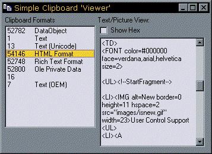

RTF Format Copy and Paste Sample (25K)
RTF Format Copy and Paste Sample (25K)
 VB5 Clipboard Classes and Sample (22K)
VB5 Clipboard Classes and Sample (22K)
 VB6 Clipboard Classes and Sample (19K)
VB6 Clipboard Classes and Sample (19K)
 VB6 Clipoard Classes and Sample (23K)
VB6 Clipoard Classes and Sample (23K)
 23 Aug 2003
23 Aug 2003
Modified the clipboard viewer task to ensure it removes itself from the clipboard chain at the right point. Previously the class could attempt to remove itself from the chain after the owning Window was destroyed, which would not work.
 Subclassing Without The Crashes
Subclassing Without The Crashes

Customising Clipboard Use
Receive clipboard change notifications and get full control over reading, writing and adding formats
The VB Clipboard object gives you quick and easy access to simple clipboard functions. But the Win32 API clipboard object offers a lot more flexibility and functionality. This article presents classes to use custom clipboard formats and receive notifications when the clipboard contents change.
Limitations of the VB Clipboard Object
The VB Clipboard object misses quite a few important clipboard functions:
- It cannot hook into the Clipboard Viewer notification system, so you can't get events when the clipboard changes. Clipboard change events are very useful in an application particularly when you are trying to code a Paste toolbar button.
- There is a strict limitation on formats which can be retrieved. You are limited to Text,
Pictures and Metafiles. However, there are lots of other formats, and some are extremely useful. For example:
- The file copy/paste format used in Explorer (FileList and FileName formats). Allow your app to share files with Explorer easily!
- The HTML Format pasted by IE4 and above. When you copy a section from a web page in IE, IE puts the data on the clipboard in text, RTF and HTML formats (and some other private or OLE binary formats). The HTML format gives you a frament of HTML code for the selected item, which is great if you're writing web pages.
- Rich Text Format. It would be nice to be able to choose whether to paste RTF or Text in a RichTextBox control. But you can't do it in VB.
- OwnerLink format. This tells you what program pasted the object onto the clipboard. If you can read it, you can make intelligent decisions about what to paste from the clipboard. For example, Excel will often paste a bitmap and a metafile of an object. The metafile is tiny in size compared with the bitmap and it would be much better to use this if storage is at a premium.
- You can't define your own private formats, even if you only want to include text in them. Private formats are extremely useful in applications which can paste data in multiple formats. Normally your application will understand more about the data than other applications on the system. But you still want to put information on the clipboard in standard formats such as Text so users can easily paste into Word, Excel etc. (Of course, you really want to paste in RTF as well...) This normally leads to a compromise where cut/copy/paste in your own application can't maintain all its data because it has to provide a friendly format for data sharing.
This project provides two new clipboard classes which break all of these limitations. With these classes you can hook into clipboard change notifications and have complete access to all clipboard formats, both read (paste) and write (cut/copy).
The Clipboard Change Notification Class (cClipboardViewer)
An application can be notified of changes in the data stored in the clipboard by registering itself as a Win32 Clipboard Viewer. Having done this, the application is then notified of changes in the clipboard by the WM_DRAWCLIPBOARD message. Your application becomes part of a chain of applications on the system which respond to this message, and is responsible for forwarding the message after reading it to the next application along. To do this, your application must store the next window along in the chain to forward messages to and also respond to the WM_CHANGECBCHAIN message which is sent whenever any other clipboard viewer on the system is added or removed to ensure the next window along is valid.
This functionality is provided in the download code by the cClipboardViewer class. This uses the Subclassing and Timer DLL to intercept WM_DRAWCLIPBOARD and WM_CHANGECBCHAIN messages and to provide the required message passing and chain fixing functions.
To use this class you only need to make two calls:
- InitClipboardChangeNotification
To attach your application to the clipboard viewer notification chain. - StopClipboardChangeNotification
To remove your application. Note this is called automatically when the class terminates.
When notification is on, the class raises the ClipboardChanged event whenever the clipboard changes. Your application can then query the clipboard contents using the next class to work out what to do.
The Custom Clipboard read/write class (cCustomClipboard)
This class encapsulates the Win32 API Clipboard functions. The following list details the methods and properties of the class:
- AddFormat
Adds a custom clipboard format and returns its ID if successful, otherwise returns 0. - ClearClipboard
Clears the contents of the clipboard. - ClipboardClose
Closes the clipboard if the class has it open. Always call this after a call to ClipboardOpen. Whilst the class has the clipboard open, other applications cannot write to the clipboard. - ClipboardOpen
Opens the clipboard for read/write access. You must call this before attempting to access or put data into the clipboard. - FormatCount
Returns the number of formats currently available on the clipboard. - FormatIDForName
Returns the Clipboard ID for a specified Clipboard format name. This does the opposite of the FormatName property. - FormatName
Returns the Clipboard format name for a given ID. This does the opposite of the FormatIDForName property. - GetBinaryData
Returns a byte array containing the clipboard contents for a specified format ID. You must have called ClipboardOpen before calling this function. - GetClipboardMemoryHandle
Returns a Win32 API global memory handle to the data in the clipboard for a specified format ID. You must have called ClipboardOpen before calling this function. - GetCurrentFormatID
After calling the GetCurrentFormats method, you can use this to retrieve the format ID for the Indexed entry in the format list. - GetCurrentFormatName
Similar to GetCurrentFormatID, but returns the Name of the format for the Indexed entry in the format list. - GetCurrentFormats
Enumerates all the names and IDs of items currently on the clipboard, and returns the number of items. You can subsequently retrieve the names and IDs using the GetCurrentFormatName and GetCurrentFormatID properties. - GetFileList
If the clipboard contains the file format CF_HDROP (i.e. files cut or copied from explorer) then this function will return the list of files associated with the format. - GetTextData
Similar to GetBinaryData except it returns a string containing the clipboard data rather than a byte array. Use when you know the clipboard format can be read in text format. - HasCurrentFormat
Following a call to GetCurrentFormats, this property returns whether a specified clipboard format ID is in the list of formats. See also IsDataAvailableForFormat. - IsDataAvailableForFormat
Returns whether a specified clipboard format ID is available by querying the clipboard itself. The clipboard must have been opened with the ClipboardOpen method before this is called. - IsDataAvailableForFormatName
Similar to the IsDataAvailableForFormat method except works on a specified clipboard format name rather than an ID. - SetBinaryData
The write equivalent of GetBinaryData. - SetClipboardMemoryHandle
The write equivalent of GetClipboardMemoryHandle. - SetFileList
The write equivalent of GetFileList. - SetTextData
The write equivalent of GetTextData.
To see how to use these methods to implement clipboard copy and paste for non-standard formats, download the RTF Clipboard Copy and Paste sample. This demonstrates how to add complete custom clipboard format in about 10 or so lines of code.